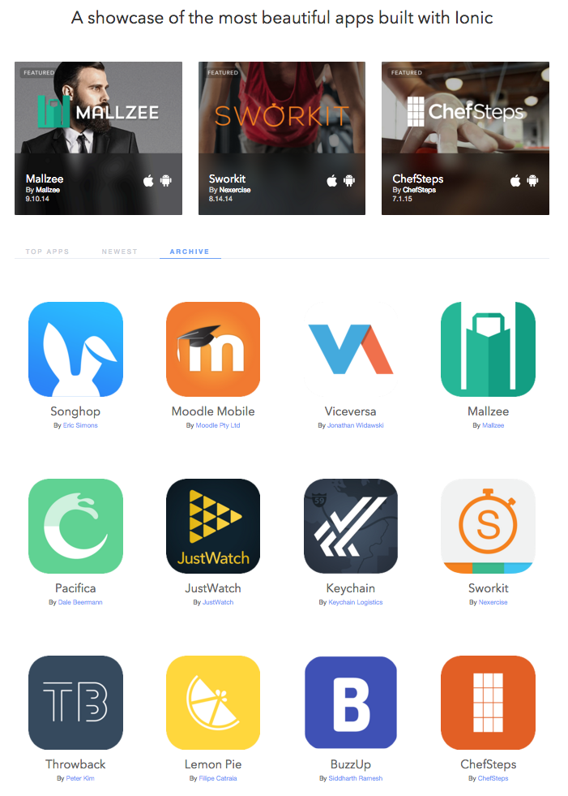
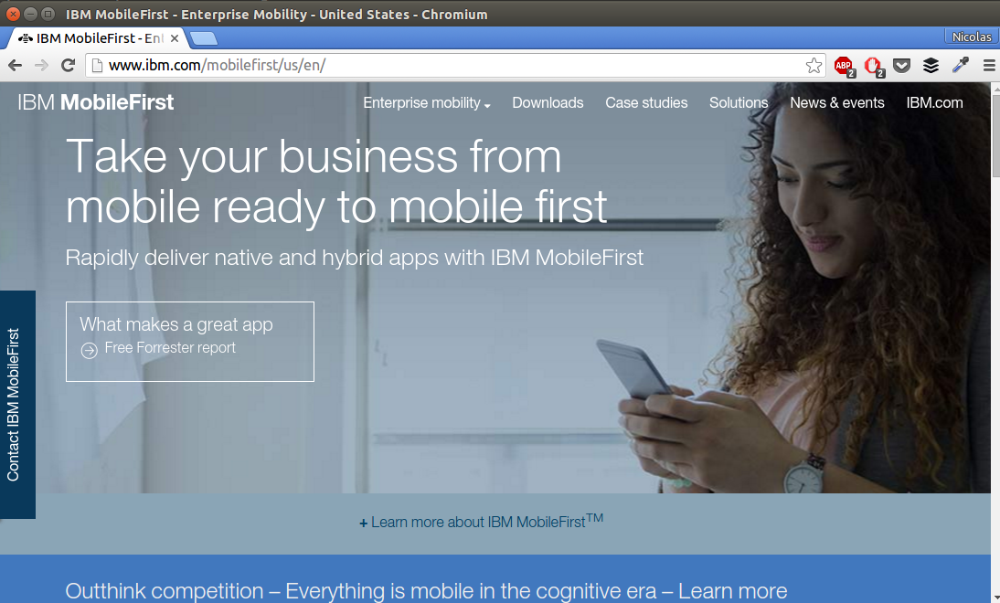
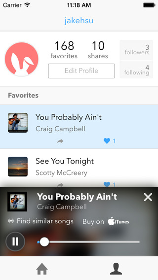
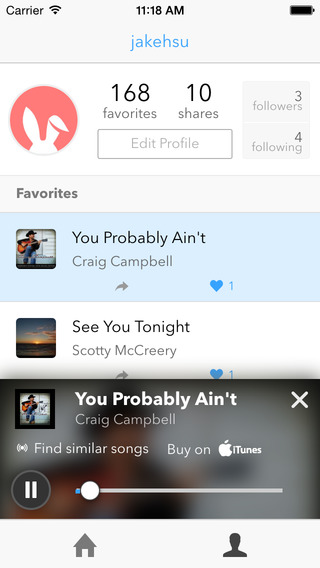

V2 and Beyond
Nicolas Molina | @nicobytes
{
name: 'Nicolas Molina Monroy',
twitter: '@nicobytes',
github: 'https://github.com/nicobytes'
jobs: [
'Hybrid App Developer',
'Front-End Developer'
],
organizer: [
'http://www.meetup.com/es/Hybrid-Apps-Colombia',
'http://www.meetup.com/es/Django-Bogota',
'http://www.meetup.com/es/Meteor-Bogota'
]
}
Ionic 2 is still in Alpha
Final API may or may not look the same
Ionic V1!
SDK for Developing Hybrid Apps
Focused on mobile first
Sass for easy customization
Angular for code strucutre
Native SDKs...
Are Great!
Common UI, APIs, views, navigation, stack history, transitions, interactions, gestures, etc.

Web Technologies You Already
Know & Love


(You'll feel right at home)
Superpowered by
Angular
Extends the HTML vocabulary
Proven for large-scale app development
UI Components using Directives & Services
Native Focused
- Modeled off of native SDKs
- Built to work with Cordova
Performance Obsessed
- Hardware accelerated animations
- Minimal DOM Manipulation
- Remove 300ms tap delay

Plain ol' CSS
- Cohesive visual system
- Clean and simple
- Easy to customize
- Stand-alone CSS (independent of Ionic's JavaScript)
Sass!
CSS generated from the Sass preprocessor
Quickly give your app its own look and feel
CSS designed to be easily overridden
Variables based with default settings
Ionic seems to have taken the world by storm
ShowCase
http://showcase.ionicframework.com/ IBM Mobile
http://www.ibm.com/mobilefirst/ Apps
 



The Stats
34th most popular OSS project (20,000+ stars on GitHub)
ONE MILLION apps built with the SDK
105 Meetup Groups around the world
Ionic apps top app store charts
Used everywhere from
Fortune 50 co’s to YC/TechStars companies
Ionic V1 is great
But a lot's changed since its release
2 years is a long time in web tech!
A lot's changed
Better/faster devices!
Fewer slow/bad devices!
Widely available web APIs!
Improved browser engines!

V2 will be the same powerful framework, but built for the future

v2 Goals
Simplicity
Platform Continuity
Performance
Creative Freedom
Code once

Talk is cheap
Let's see some code
Simplicity
Using properties instead of classes
V1 Buttons
Classes can get
complex and cluttered
Move things to properties instead
Easier to understand and less markup
Easy to overide with classes
<a button primary></a>
<a button outlined secondar></a>
<a button clear dark></a>
<a button danger>
<icon close></icon>
</a>
Equally easy to style and extend
[round]{
border-radius: 30px;
}
[button][block]{
width: 80%;
}
Ionic 2 uses element properties
Less clutter, easier to reason, and just as customizable
Doesn't change how you write your styles
Near Native UX
The different modes for Ionic 2
Platform Continuity
iOS : Android
One code base
Same HTML and JS
More than just different CSS

Icons
<icon home></icon>
<icon person></icon>
<icon settings></icon>
<icon globe></icon>
<icon lock></icon>
<icon mail></icon>
<icon options></icon>
<icon camera></icon>
<icon calculator></icon>
<icon finger-print></icon>
<icon flash></icon>
<icon beer></icon>
Action Sheet
this.actionSheet.open({
buttons: [
{text: 'Share This'},
{text: 'Move'}],
destructiveText: 'Delete',
titleText: 'Modify your album',
cancelText: 'Cancel'
});
SideMenu
iOS: reveal underneath the content
MD: overlay on top of the content
Highly configurable
Navigation
More than just different animations
Built using Web Animations API
Easy to change and add new animations
All highly configurable
Same easy configuration as V1
Much easier to change the design
Navigation
More robust and powerful
I need to open a modal, then navigate to a subview
I want to create a subview in a sidemenu
V1's routing was tightly coupled to URLs
Uses UI-Router, which didn’t give full control
For V2, we needed to rethink navigation
V1's Routing
.config(function($stateProvider){
$stateProvider
.state('firstpage', {
url:'/firstpage',
templateUrl: 'firstpage.html'
})
.state('secondpage', {
url:'/secondpage',
templateUrl: 'secondpage.html'
})
.state('thirdpage', {
url:'/thirdpage/:id',
templateUrl: 'thirdpage.html'
});
});
UI-Router
Doesn't give the flexibility you want
Navigation is more about a user experience
Traditional browser-based URLs don't offer that
Developers NEED to be in complete control
Push/Pop Navigation
import SecondPage from '../secondpage';
export class FirstPage {
constructor(nav: NavController) {
this.nav = nav
};
pushState() {
this.nav.push(SecondPage)
};
};
Full Control
Push on to the nav stack
Pop from the nav stack
Insert/Remove/Update
URL reflects app's state
pushSettings() {
this.nav.push(Settings);
}
goBack() {
this.nav.pop();
}
resetHome() {
this.nav.setRoot(Home);
}
Creative Freedom
Make anything possible
Making Sass even easier
Sass is enabled by default
Apps should fit their brand first
Build tools already included
V1: Colors were hardcoded in
$light: #fff !default;
$stable: #f8f8f8 !default;
$positive: #387ef5 !default;
$calm: #11c1f3 !default;
$balanced: #33cd5f !default;
$energized: #ffc900 !default;
$assertive: #ef473a !default;
$royal: #886aea !default;
$dark: #444 !default;
Every component had a block for each color
Base Colors are defined in a map
$colors: (
primary: #387ef5,
secondary: #32db64,
danger: #f53d3d,
light: #f4f4f4,
dark: #222,
) !default;
Easily change, remove, or add new colors
Design for your brand
$colors: (
primary: #387ef5,
myBrand: #ead351
) !default;
Will only generate CSS for primary and myBrand
Slims down your CSS, giving you only what you need
Makes customization even easier
Animations
V1 animations were a mix of css and js
CSS animations can be quite limiting
No way interact with them
Web Animations API
It aims to bring the power of CSS performance, add the benefits and flexibility of JavaScript
V2 Animations
Nice CSS friendly syntax
Easy to define your own animations
var ionitron = document.querySelector('#ionitron');
var spin = new Animation(ionitron);
spin
.from('transform', 'rotate(0deg)')
.to('transform', 'rotate(360deg)')
this.animation.add(spin);
play() {
this.animation.play();
}
CSS friendly syntax, but adds the options of variables, controls, and finish callbacks
Baked into chrome natively
Great performance on android
Polyfil for iOS offers the same great performance
Sass
Enabled by default
Easier to add/remove custom colors
Animations
Web Animations API
Easy to customize
Friendly CSS syntax
Interactive control
Future Proof
Building Ionic with new standards
JavaScript has changed
Ionic 1 was built with ES5
ES6 brings many new features
NG2 is pushing for ES6
Different look, but all JS Classes

Benefit of ES6
Modular: Import what you need & and gets rid of globals
Scoping: let defines a block-scoped variable
Promises: Built into the language natively
Classes: Simpler syntax for building objects
TypeScript
ES6 + ES7 Decorators + Types
Ionic 2 and NG2 built using TS
Code completion in your editor
You pick whats right for you
Ionic supports either option: ES6 or TS
You can mix both filetypes in a project
Build system will handle them and compile down ES5
Final Message
Ionic 1 is still a great solution
V2 will provide the same ease of development as V1
Modern, powerful, and robust API